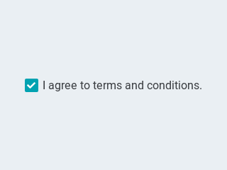
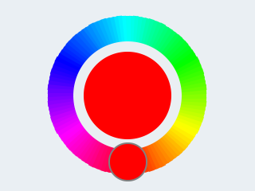
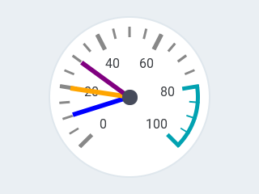
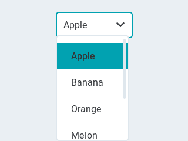

Objects
There are two ways to create an object on the screen:
- Uploading a
pages.jsonlfile onto the internal flash - Use the
jsonlcommand (via MQTT, serial or telnet console)
Common Properties~
These are the common properties shared among all objects,
but only the id and objid properties are required to create an object:
| Property | Value | Required | Default | Description |
|---|---|---|---|---|
| id | 0-255 | yes | n/a | ID of the object on this page |
| objid | 0-255 | yes | n/a | ID of the object type (see below) |
| page | 0-255 | no | n/a | ID of the page the object appears on |
| x | int16 | no | 0 | horizontal position on the page |
| y | int16 | no | 0 | vertical position on the page |
| w | int16 | no | 0 | width of the object |
| h | int16 | no | 0 | height of the object |
| enabled | true/false | no | true | object is clickable |
| hidden | true/false | no | false | object is hidden |
| opacity | 0-255 | no | 255 | how much the the object is opaque |
| radius | uint16 | no | dep. on theme | the radius of the rounded corners of the object, 0 = no round corners |
If the page parameter is not present, the object is placed on the same page as the previous object. If page is not specified for the first object either, the current page being displayed is used.
The maximum number of pages and objects is limited by the memory available in the MCU.
"page":254 indicates that the object is visible on every page. It can be used for example to specify a static menu bar.
You can still hide the object on select pages if needed. Objects on this page appear on top of any objects on the underlying page.
Object Types~
Each object type is an ID that indicates which object type that line represents. Besides the common properties listed above, each object type can have specific properties.
Cheatsheet~
| objid | Type |
|---|---|
| 10 | Button |
| 11 | Checkbox |
| 12 | Label |
| 20 | Colorpicker |
| 21 | Spinner |
| 22 | Arc |
| 30 | Slider |
| 31 | Gauge |
| 32 | Progress Bar |
| 33 | Line Meter |
| 40 | Switch |
| 41 | LED |
| 50 | Dropdown List |
| 51 | Roller |
| 91 | Base Object |
Button~
objid:10

Show Jsonl Code (Click to expand)
{"page":0,"comment":"---------- Page 0 ----------"}
{"objid":10,"id":1,"x":10,"y":45,"w":220,"h":55,"toggle":"TRUE","txt":"Push Me \uf0a6"}
| Property | Value | Required | Default | Description |
|---|---|---|---|---|
| toggle | boolean | no | false | When enabled, creates a toggle-on/toggle-off button. If false, creates a normal button |
| val | int16 | no | 0 | The value: 1 for toggled, 0 for untoggled |
| txt | string | no | "" | The text of the label |
| mode | string | no | expand | The wrapping mode of long text labels. Modes expand, break, dots, scroll, loop, crop |
Normal Switches send touch events out as they occur. The possible events are:
DOWN: Occurs when a button goes from depressed to pressedSHORT: The button was released within a short time i.e. a short click has occurredLONG: Event is send when the button is still being pressed after the threshold time
UP: The button is released after being pressing for a LONG threshold time.LOST: This event occurs when the object looses the focus while the screen is still being touched
Toggle Switches only send out their new value (0 or 1) when toggled.
Checkbox~
objid:11

| Property | Value | Required | Default | Description |
|---|---|---|---|---|
| val | int16 | no | 0 | 1 for checked, 0 for unchecked |
| txt | string | no | "Checkbox" | The label of the checkbox |
Text Label~
objid:12

| Property | Value | Required | Default | Description |
|---|---|---|---|---|
| txt | string | no | "Text" | The text of the label |
| mode | string | no | crop | The wrapping mode of long text labels. Modes expand, break, dots, scroll, loop, crop |
{"page":2,"id":1,"objid":12,"h":24,"w":120,"txt":"\ufe05 Icon Demo"}
Arc~
objid:22

| Property | Value | Required | Default | Description |
|---|---|---|---|---|
| min | int16 | no | 0 | minimum value of the indicator |
| max | int16 | no | 100 | maximum value of the indicator |
| val | int16 | no | 0 | current value of the indicator |
| rotation | int16 | no | 0 | offset to the 0 degree position |
| type | 0-2 | no | 0 | 0 = normal, 1 = symmetrical, 2 = reverse |
| adjustable | bool | no | false | Add indicator that the user can operate to change the value |
| start_angle | 0-360 | no | start angle of the arc background (see note) | |
| end_angle | 0-360 | no | end angle of the arc background (see note) | |
| start_angle1 | 0-360 | no | start angle of the arc indicator (see note) | |
| end_angle1 | 0-360 | no | end angle of the arc indicator (see note) |
Note
Zero degree is at the middle right (3 o'clock) of the object and the degrees are increasing in a clockwise direction. The angles should be in the [0-360] range.
Spinner~
objid:21

| Property | Value | Required | Default | Description |
|---|---|---|---|---|
| speed | int16 | no | 1000 | The time for 1 turn in ms |
| direction | int16 | no | 100 | 0 for clockwise, 1 for counter-clockwise |
| thickness | int16 | no | dep. on theme | The width of the arc line |
Colorpicker~
objid:20

| Property | Value | Required | Default | Description |
|---|---|---|---|---|
| val | uint16 | no | 0 | The selected color in RBG565 format |
| color | hex string | no | 0 | The selected color in html format #rrggbb |
| rect | boolean | no | false | true = color picker has a rectangular shape like a slider. false = circular shape. |
Slider~
objid:30

| Property | Value | Required | Default | Description |
|---|---|---|---|---|
| min | int16 | no | 0 | minimum value of the indicator |
| max | int16 | no | 100 | maximum value of the indicator |
| val | int16 | no | 0 | current value of the indicator |
Double Slider~
objid:30
| Property | Value | Required | Default | Description |
|---|---|---|---|---|
| min | int16 | no | 0 | minimum value of the indicator |
| max | int16 | no | 100 | maximum value of the indicator |
| val | int16 | no | 0 | current value of the indicator |
Line Meter~
objid:33

| Property | Value | Required | Default | Description |
|---|---|---|---|---|
| min | int16 | no | 0 | minimum value of the indicator |
| max | int16 | no | 100 | maximum value of the indicator |
| val | int16 | no | 0 | current value of the indicator |
| angle | 0-360 | no | 240 | angle between start and end of the scale |
| line_count | uint16 | no | 31 | tick count of the scale |
| rotation | 0-360 | no | 0 | offset for the scale angles to rotate it |
| type | 0-1 | no | 0 | 0 = indicator lines are activated clock-wise 1 = indicator lines are activated counter-clock-wise |
Use line properties to customise.
Gauge~
objid:31

| Property | Value | Required | Default | Description |
|---|---|---|---|---|
| min | int16 | no | 0 | minimum value of the indicator |
| max | int16 | no | 100 | maximum value of the indicator |
| val | int16 | no | 0 | current value of the indicator |
| critical_value | int16 | no | 80 | scale color will be changed to scale_end_color after this value |
| angle | 0-360 | no | 240 | angle between start and end of the scale |
| label_count | uint8 | no | number of labels (and minor tick count) of the scale | |
| line_count | uint16 | no | 31 | minor tick count of the scale |
| rotation | 0-360 | no | 0 | offset for the gauge's angles to rotate it |
| format | uint16 | no | 0 | divider for major tick values |
To strip trailing zero's of major tick labels the format divider can be used to scale the values before printing:
- 0 : print the major tick value as is
- 1 : strip 1 zero, i.e. divide tick value by 10 before printing the major tick label
- 2 : strip 2 zeros, i.e. divide tick value by 100 before printing the major tick label
- 3 : strip 3 zeros, i.e. divide tick value by 1000 before printing the major tick label
- 4 : strip 4 zeros, i.e. divide tick value by 10000 before printing the major tick label
Only these values are allowed, arbirary numbers are not supported.
Progress Bar~
objid:32

| Property | Value | Required | Default | Description |
|---|---|---|---|---|
| min | int16 | no | 0 | minimum value of the indicator |
| max | int16 | no | 100 | maximum value of the indicator |
| val | int16 | no | 0 | current value of the indicator |
Switch~
objid:40

| Property | Value | Required | Default | Description |
|---|---|---|---|---|
| val | int16 | no | 0 | 1 for on, 0 for off |
bg_color1 changes indicator color and bg_color2changes knob color
LED Indicator~
objid:41

| Property | Value | Required | Default | Description |
|---|---|---|---|---|
| val | byte | no | 0 | The brightness of the indicator [0..255] |
Dropdown List~
objid:50

| Property | Value | Required | Default | Description |
|---|---|---|---|---|
| options | string | no | "" | List of items separated by \n |
| val | int16 | no | 0 | The number of the selected item |
| txt | string | no | "" | Read-only The text of the selected item |
To change the currently selected item, use the val attribute.
To change the items in the list, use the options attribute.
When the item is changed both val and txt of the newly selected item are send out.
Roller~
objid:51
| Property | Value | Required | Default | Description |
|---|---|---|---|---|
| options | string | no | "" | List of items separated by \n |
| val | int16 | no | 0 | The number of the selected item |
| txt | string | no | "" | Read-only The text of the selected item |
| rows | int8 | no | 3 | The number ow rows that are visible |
Note
A roller does not use the h attribute to set its height but uses the rows attribute instead.
To change the currently selected item, use the val attribute.
To change the items in the list, use the options attribute.
When the item is changed both val and txt of the newly selected item are send out.
Base Object~
objid:91
The Base Object can be directly used as a simple widget. It is nothing more then a (rounded) rectangle.